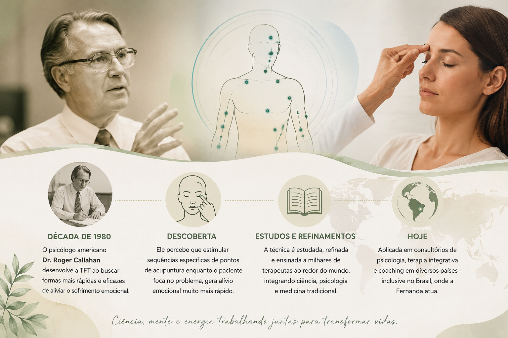
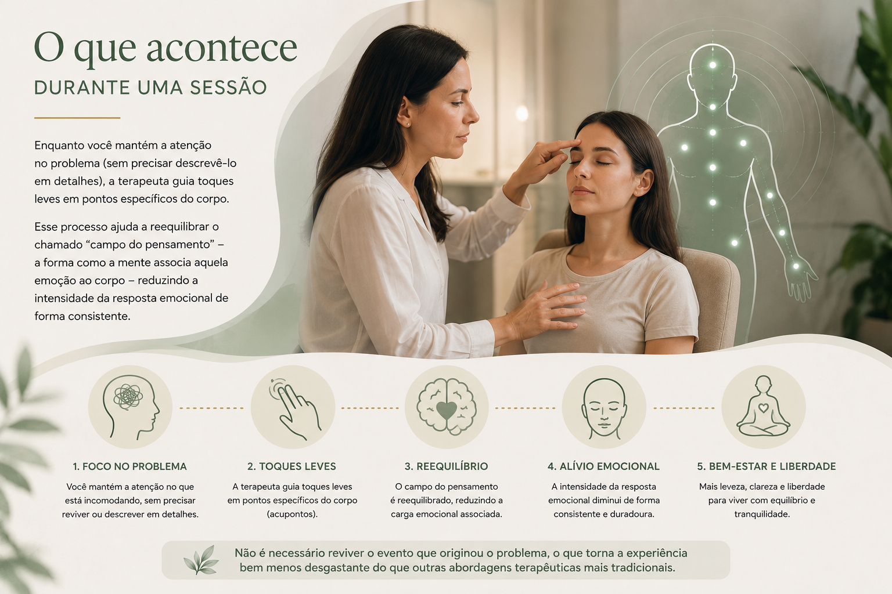

A técnica por trás da transformação
Uma explicação mais completa sobre a origem da Thought Field Therapy, como ela atua no corpo e na mente, e a amplitude real dos resultados que ela pode proporcionar.
A história da TFT
A Thought Field Therapy (TFT) foi desenvolvida na década de 1980 pelo psicólogo americano Dr. Roger Callahan. Ao longo de sua carreira tratando fobias, ele percebeu que estimular sequências específicas de pontos de acupuntura, enquanto o paciente mantinha o foco mental no problema, produzia alívio emocional significativamente mais rápido do que as abordagens tradicionais.
Desde então, a técnica foi estudada, refinada e ensinada a milhares de terapeutas ao redor do mundo, sendo hoje aplicada em consultórios de psicologia, terapia integrativa e coaching em diversos países — inclusive no Brasil, onde a Fernanda atua.

O que acontece durante uma sessão
Enquanto você mantém a atenção no problema (sem precisar descrevê-lo em detalhes), a terapeuta guia toques leves em pontos específicos do corpo. Esse processo ajuda a reequilibrar o chamado "campo do pensamento" — a forma como a mente associa aquela emoção ao corpo — reduzindo a intensidade da resposta emocional de forma consistente.
Não é necessário reviver o evento que originou o problema, o que torna a experiência bem menos desgastante do que outras abordagens terapêuticas mais tradicionais.

O quanto a TFT já ajudou a resolver
Ao longo de mais de 8 anos de atuação, a Fernanda já aplicou a TFT nos mais variados contextos — emocionais e físicos. Veja alguns exemplos reais do que a técnica já ajudou a tratar.
Ansiedade e Pânico
De crises de ansiedade generalizada a síndrome do pânico, incluindo o medo de falar em público — um dos casos mais recorrentes no consultório.
Depressão e Baixa Autoestima
Apoio no manejo de sintomas depressivos e no fortalecimento da autoconfiança e autoestima.
Traumas
Desde traumas de infância até eventos mais recentes, trabalhados sem a necessidade de reviver os detalhes.
Fobias e Agorafobia
De fobias específicas ao medo de sair de casa sozinho(a), com redução progressiva do medo a cada sessão.
Dores e Sintomas Físicos
Dores de cabeça tensionais, tensão muscular, dores nas costas e pernas, e sintomas físicos ligados ao estresse.
Endometriose
Apoio emocional complementar em casos de dor associada à endometriose, sempre em conjunto com o acompanhamento médico.
Compulsão Alimentar
Redução da intensidade dos gatilhos emocionais que levam à compulsão.
Luto e Raiva
Elaboração de perdas e melhor manejo de raiva e irritabilidade no dia a dia.
Resultados podem variar de pessoa para pessoa. A TFT é uma abordagem complementar de apoio emocional e não substitui diagnóstico, tratamento ou acompanhamento médico quando necessário.
A experiência por trás da técnica
Como as pessoas mudam de verdade
O que diferencia a TFT de muitas outras abordagens é a rapidez com que a mudança pode ser sentida. Não é incomum que uma pessoa chegue a uma sessão carregando uma ansiedade ou um medo que a acompanha há anos, e saia da mesma sessão sentindo uma diferença perceptível na intensidade daquela emoção — muitas vezes já na primeira aplicação.
Isso não significa que tudo se resolve em uma única sessão — cada pessoa e cada história é diferente — mas significa que o caminho costuma ser mais leve, mais rápido e menos desgastante do que se imagina antes de começar.
Outras dúvidas comuns sobre a TFT
A TFT é estudada há décadas e utilizada por terapeutas em diversos países. Como toda abordagem complementar, os resultados podem variar de pessoa para pessoa.
Não. Os toques são leves, feitos com a ponta dos dedos, sem qualquer tipo de dor ou desconforto físico.
Não é necessário. Basta manter o foco no problema durante a sequência de toques indicada pela terapeuta.
Varia de pessoa para pessoa e do que está sendo trabalhado. Muitos sentem alívio já nas primeiras sessões, mas o acompanhamento é sempre individualizado.
Pronto para dar o primeiro passo?
Fale com a Fernanda e entenda como a TFT pode ajudar no que você está sentindo.